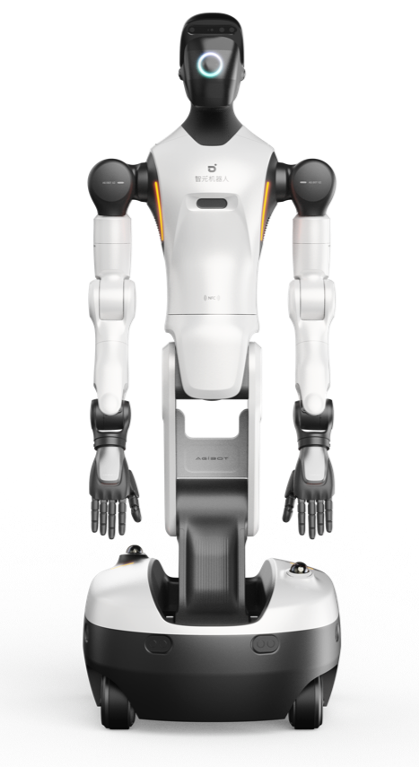

Executive Summary
아지봇(AGIBOT)이 2026년 6월 3일 AGIBOT WORLD 2026 데이터셋의 두 번째 테마 "Rich Interaction"을 공개했습니다. 이전 로봇 데이터셋이 대부분 깨끗한 성공 시연만 모았다면, 이번 데이터는 반대 방향을 택했습니다. 로봇이 물건을 놓치고, 부딪히고, 미끄러지고, 액체를 흘리는 순간을 의도적으로 수집했습니다. 그리고 그 접촉의 질감을 시각뿐 아니라 촉각 센서로 함께 기록했습니다. 이 글은 그 선택이 Physical AI 데이터 전략에 무엇을 뜻하는지를 봅니다.
데이터는 양팔 휴머노이드 G2가 RGB(D) 카메라, 그리퍼 촉각 신호, LiDAR, IMU, 전신 관절 상태를 하나의 동기화된 파이프라인에서 수집한 100% 실세계 기록입니다. 데이터셋은 한 번에 풀리지 않고 연구 방향별 다섯 단계로 나뉘어 공개됩니다. 첫 테마가 모방학습, 이번 두 번째가 접촉이 많은 상호작용을 겨냥합니다. 한 번 모아 끝나는 덤프가 아니라, 연구 질문에 맞춰 설계되는 자산이라는 신호입니다.
로봇 데이터의 다음 병목은 양이 아니라 무엇을 기록하느냐입니다. 세계 모델을 학습시키려면 마찰, 미끄러짐, 힘의 미세 조정 같은 접촉의 물리가 필요한데, 이것은 깨끗한 성공 영상에 담기지 않습니다. 어떤 모달리티를 어떤 충실도로 남길지가 곧 데이터 품질의 새 좌표가 되고 있습니다.
주요 수치
아래 네 숫자가 AGIBOT WORLD 2026의 설계 방향과 규모를 압축합니다. 앞 두 수치는 데이터를 무엇으로 채웠는지를, 뒤 두 수치는 그 데이터가 풀려는 격차를 가리킵니다.
출처: The Robot Report · AGIBOT 공식
5종
동기화 모달리티
RGB(D)·촉각·LiDAR·IMU·관절
100%
실세계 데이터
Theme 2, 합성 영상 아님
5단계
분할 공개
연구 방향별로 설계
200만 미만
오픈 조작 데이터
가동 로봇 390만 대에 못 미침

성공만 담은 데이터가 못 가르치는 것
로봇 조작 데이터셋은 오랫동안 깨끗한 성공 시연을 모으는 데 집중했습니다. 로봇이 컵을 정확히 집어 정확히 놓는 궤적만 남기고, 중간에 미끄러지거나 부딪힌 기록은 노이즈로 보고 지웠습니다. 직관적으로는 설득력 있는 선택입니다. 완벽한 예시만 보여 주면 모델도 완벽을 따라 배울 것이라는 논리이기 때문입니다.
문제는 그렇게 학습한 모델이 행동의 겉모습은 복사하지만 그 아래의 물리는 이해하지 못한다는 데 있습니다. 세계 모델(world model)은 손이 물체에 닿을 때 어느 정도 저항이 오고, 언제 미끄러지기 시작하며, 힘을 얼마나 더 줘야 미끄러짐이 멈추는지를 예측할 수 있어야 합니다. 마찰, 변형, 힘의 미세 조정 같은 정보는 성공 영상의 픽셀에 담기지 않습니다.
촉각이 빠진 데이터의 한계는 그립 하나만 봐도 분명합니다. 카메라 영상으로는 그리퍼가 물체를 정말 단단히 쥐었는지, 아니면 곧 빠질 만큼 아슬아슬하게 걸쳐 있는지 구분하기 어렵습니다. 사람도 눈을 감고 손끝 감각만으로 컵을 드는 데 큰 어려움이 없지만, 손끝 감각을 마취하면 같은 동작이 위태로워집니다. 접촉이 많은 조작에서 힘과 촉각 신호 없이 학습한 정책이 실패 직전 상황에 약한 이유가 여기 있습니다.
AGIBOT WORLD 2026 Theme 2의 출발점이 바로 이 공백입니다. 진짜 물리 지능은 놓침, 충돌, 낙하, 불안정한 접촉, 액체가 튀는 순간 같은 변동성 속에서 어떻게 반응하는지를 배워야 합니다. 그래서 이 데이터는 성공만 골라 담는 대신, 접촉의 질감 자체를 기록 대상으로 끌어올렸습니다.
AGIBOT WORLD 2026이 기록하는 것
수집 플랫폼은 양팔 휴머노이드 AGIBOT G2입니다. 손재주가 필요한 조작을 위해 Zhixing 90D 그리퍼와 OmniHand를 달았고, 여기서 나오는 신호를 하나의 동기화된 파이프라인에서 함께 기록합니다. RGB(D) 카메라, 그리퍼의 촉각 신호, LiDAR 포인트 클라우드, IMU, 전신 관절 상태가 같은 타임라인 위에 정렬됩니다. 촉각 센서의 갱신 주기가 카메라보다 훨씬 빠르기 때문에 이 정렬 자체가 기술적 난제이고, 그것을 통합 파이프라인으로 풀었다는 점이 이 데이터셋의 핵심입니다.
이 구성을 기존의 큰 오픈 로봇 데이터셋과 견줘 보면 차이가 분명합니다. 그동안 규모를 키운 공개 데이터셋들은 대체로 서로 다른 로봇의 기록을 한데 모아 에피소드 수를 늘리는 방향이었고, 촉각과 힘을 영상과 같은 타임라인에 동기화해 함께 담은 경우는 드물었습니다. 접촉이 많은 조작에 특화한 일부 데이터셋이 힘·토크·촉각을 포함하긴 했지만, 산업 규모로 가동되는 단일 휴머노이드 플랫폼에서 이 모달리티들을 처음부터 하나의 파이프라인으로 묶은 사례는 흔치 않습니다. AGIBOT WORLD 2026이 기존 데이터셋과 결이 다른 지점이 여기입니다.

2.1탐색적 원격조작으로 모은 변동성
Theme 2의 데이터는 정해진 시연을 반복해 찍은 것이 아닙니다. 조작자가 다양한 재료, 기하 구조, 기계적 특성을 가진 물체와 자유롭게 상호작용하도록 의도적으로 유도하는 탐색적 원격조작(exploratory teleoperation) 방식으로 모았습니다. 성공만이 아니라 불완전한 접촉과 예외 결과를 함께 남기는 것이 목적이기 때문입니다. 그 결과 기록되는 것은 접촉 역학, 재료 변형, 객체 반응, 그리고 시각과 촉각과 힘이 합쳐진 멀티모달 피드백입니다.
2.2다섯 단계로 설계된 공개
데이터셋은 한 번에 공개되지 않습니다. 각 단계가 embodied intelligence의 서로 다른 연구 방향에 대응하도록 다섯 테마로 나뉩니다. 첫 테마는 수백 시간 규모의 모방학습 데이터로, 작업 설명과 액션 시퀀스, 원자 스킬 레이블, 오류 복구 궤적을 담았습니다. 이번 두 번째 테마가 접촉이 많은 상호작용을 겨냥하고, 세 번째부터 다섯 번째까지는 순차 공개를 예고했습니다.
- · Theme 1 — 모방학습: 수백 시간 실세계 데이터, 작업 설명·액션 시퀀스·원자 스킬·오류 복구 궤적 포함
- · Theme 2 — Rich Interaction (2026-06-03): 100% 실세계, 탐색적 원격조작으로 모은 놓침·충돌·낙하·불안정 접촉·액체 튀김
- · Theme 3~5 — 미발표: 서로 다른 연구 질문을 겨냥해 순차 공개 예정
분할 공개는 단순한 배포 일정이 아닙니다. 데이터를 한 덩어리로 던지는 대신 연구 질문 단위로 잘라 설계했다는 뜻입니다. 모방학습에 필요한 데이터와 접촉 물리를 배우는 데 필요한 데이터는 같은 로봇으로 모아도 결이 다릅니다. 그 차이를 테마로 분리한 구조 자체가 메시지입니다.
2.3실측 옆에 둔 디지털 트윈
아지봇은 실세계 데이터와 함께 1:1 디지털 트윈 환경에서 만든 시뮬레이션 데이터를 같이 공개했습니다. 이 부분은 GenieSim 프로젝트로 오픈소스화되어 sim-to-real 연구를 돕습니다. 합성 데이터로 양을 채우고 실측 데이터로 충실도를 보정하는 두 갈래를 한 데이터셋 안에 나란히 둔 셈입니다. 전체는 CC BY-NC-SA 4.0 라이선스로 Hugging Face에 올라가 있고, IROS 2025 Best Paper 후보에 오른 플랫폼 위에서 수집됐습니다.

병목은 양이 아니라 무엇을 기록하느냐
Physical AI 데이터의 병목은 흔히 양으로 이야기됩니다. 전 세계에서 390만 대가 넘는 산업 로봇이 가동되지만, 공개된 가장 큰 조작 데이터셋들을 모두 합쳐도 에피소드 수는 200만에 못 미칩니다. 하드웨어 규모와 데이터 규모의 격차는 분명 큽니다. 그러나 AGIBOT WORLD 2026이 던지는 질문은 양의 격차보다 한 칸 앞에 있습니다. 같은 한 시간을 기록하더라도 무엇을 어떤 충실도로 담느냐가 데이터의 가치를 가른다는 것입니다.
촉각과 힘은 시각으로 대체되지 않는 모달리티입니다. 세계 모델이 예측해야 하는 저항과 마찰과 미끄러짐은 손끝에서 일어나는 일이지, 카메라 화각 안에서만 일어나는 일이 아니기 때문입니다. 그래서 어떤 모달리티를 빠뜨렸는지가 데이터의 천장을 정합니다. 시각만 담은 데이터는 아무리 양을 늘려도 접촉의 물리를 채우지 못합니다.
다섯 단계 분할은 또 다른 좌표를 보여 줍니다. 좋은 로봇 데이터는 한 번 모아 끝나는 자원이 아니라, 연구 방향에 맞춰 설계되고 갱신되는 자산이라는 것입니다. 합성과 실측을 한 데이터셋에 나란히 둔 선택도 같은 맥락입니다. 양은 합성으로 늘리되 접촉 물리의 충실도는 아직 실측이 담보한다는 현재의 한계를, 데이터셋 구조가 그대로 인정하고 있습니다.
Editor's Note. 페블러스가 데이터 품질을 '얼마나 많이 모았는가'가 아니라 '무엇을 어떤 충실도로 남겼는가'의 문제로 보는 이유가 여기 있습니다. 로봇 데이터의 다음 경쟁은 에피소드 수를 늘리는 싸움에서, 어떤 모달리티를 어떤 연구 질문에 맞춰 설계하느냐의 싸움으로 옮겨가고 있습니다. AGIBOT WORLD 2026은 그 좌표가 이미 로봇 연구의 최전선에서 그려지고 있음을 보여 줍니다.
(주)페블러스 데이터 커뮤니케이션팀
2026년 6월 27일